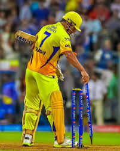

Juventus star Cristiano Ronaldo tests positive for coronavirus, showing no symptoms Portugal captain and Juventus star Cristiano Ronaldo has been tested positive for the novel coronavoirus. The information was published by the Portuguese Football Federation , which reported the attacker's absence in the match against Sweden, in the League of Nations. |
 |
Players involved in the first Super Over couldn’t take part in the second. KXIP knocked off their victory target of 12 easily with Chris Gayle hitting Trent Boult for a six first ball and Mayank Agarwal sealing the deal with two boundaries. One Super Over was not enough to separate the two sides. In the first one, Jasprit Bumrah took two wickets for Mumbai Indians and conceded just five runs. Mohammed Shami matched the effort to ensure Kings XI Punjab stayed alive. Players involved in the first Super Over couldn’t take part in the second. KXIP knocked off their victory target of 12 easily with Chris Gayle hitting Trent Boult for a six first ball and Mayank Agarwal sealing the deal with two boundaries. |
|  |
Former India captain Kris Srikkanth on Monday (October 19) slammed Chennai Super Kings (CSK) skipper Mahendra Singh Dhoni for his "did not see spark in some of our youngsters" comment after the CSK faced a seven-wicket win against Rajasthan Royals in their Indian Premier League (IPL) 2020 clash. Srikkanth also raised question over Dhoni's decision to include players like Kedar Jadhav and Piyush Chawla in the playing XI of the squad.s After the defeat against RR, Dhoni said during the post-match presenation ceremony said that he decided to not give youngsters chance in the starting 10 matches of the side because they lacked spark in them. "It's fair enough [the criticism for not playing youngsters], this season we weren't there. Maybe we didn't see as much spark from some of our youngsters. Maybe going forward we bring them in and they play without pressure," Dhoni had said. |